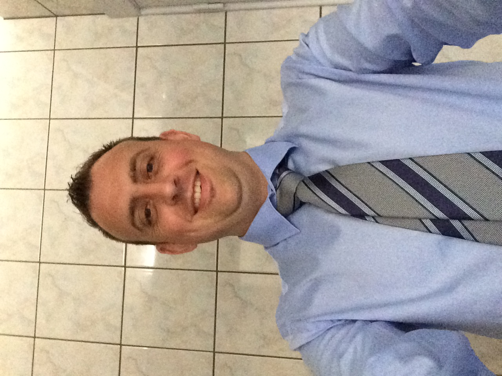

|  | Naam: | Joeri Vervloessem |
| Adres: | Braakveld 5 2200 Morkhoven | |
| Tel: | 0472991193 | |
| e-mail: | joeri.vervloessem@telenet.be | |
| Nationaliteit | Belg | |
| Geborrteplaats -en datum | Lier, 23 oktober 1976 | |
| Burgerlijke stand: | gehuwd | |
| Studies | - Graduaat Chemie HPA Antwerpen 1997-1998 - Graduaat voedings en dieetleer REGA Leuven 1994-1996 - Hoger technisch onderwijs Hotel SIMA Aarschot 1990-1994 |
|
| Opleidingen: | - Proces-operator - Train de trainer - Managing others Leadership program - Lean academy 1 |
|
| Vaardigheden: | - Nederlands Moedertaal - Engels Zeer Goed - Frans Goed - Duits Matig |
|
| Werkervaring | - Genzyme Flanders, Geel Process-technician 2002-2008 SEP supervisor. 2008-2016 System owner mAbs plant 2 2016 – 2018 OJT Trainer 2018 – 2021 Process engineer 2021 - 2022 Trainingscoôrdinator 2022 - - De Neef Chemical recycling, Heist-Op-Den-Berg Process-Operator Bedienen van destillatie kolommen, Waterzuivering 2000-2002 - CWG, Herenthout Magazijnier-monteur Maken en plaatsen van waterontharders 1998-2000 |
|
| Varia: | - Werken met DCS systemen - Werken met PLC - Werken met MES - Werken met Athena - Ervaring in FAT en SAT Bioreactoren campath, myozyme, mAbs. Parts washers plant 1 en 2. CIP toads - Opstart nieuwe plant USP Campath, NEO en mAbs - Getraind in cGMP(20 jaar). - Ervaring in een opstart van een nieuwe productie faciliteit (Plant1 Campath en myozyme).(Plant 2 mAbs) - Ervaring met IO loop check - Green en Blue tag ervaring - Red lining electrical drawings: Bioreactoren, parts washers, Seedlab, waves subs en centrifuge - Ervaring met calibratie - Ervaring in het lezen van Frs, P&ID’s als ook aanpassen en testen - Schrijven en implementeren WI’s , trainingen en andere documentatie vormen - Schrijven van MES MBr's |